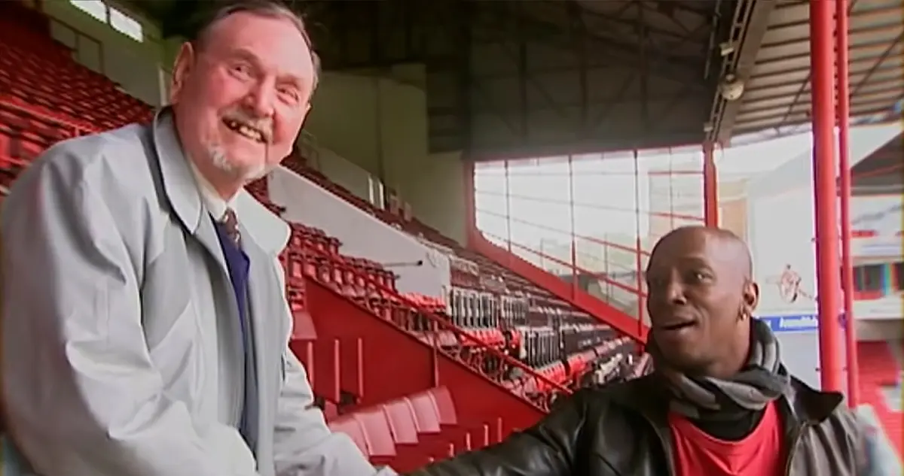
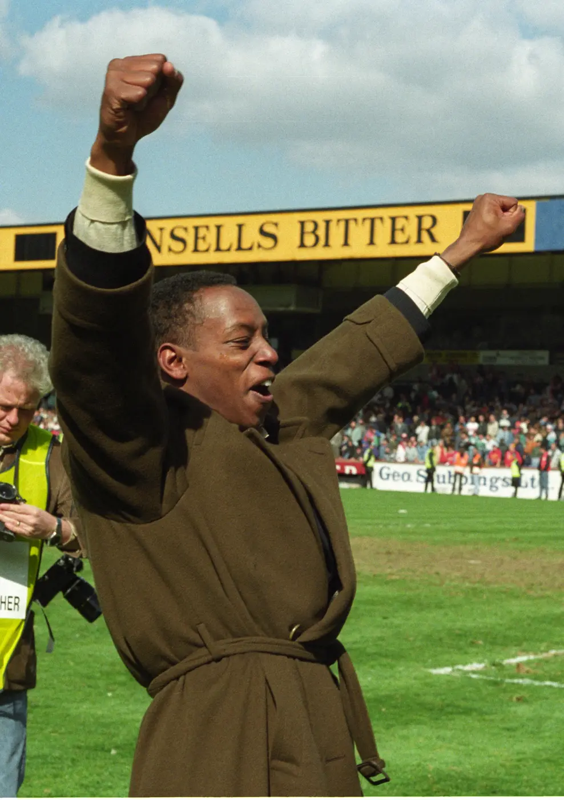
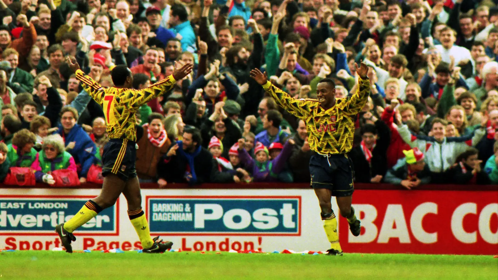
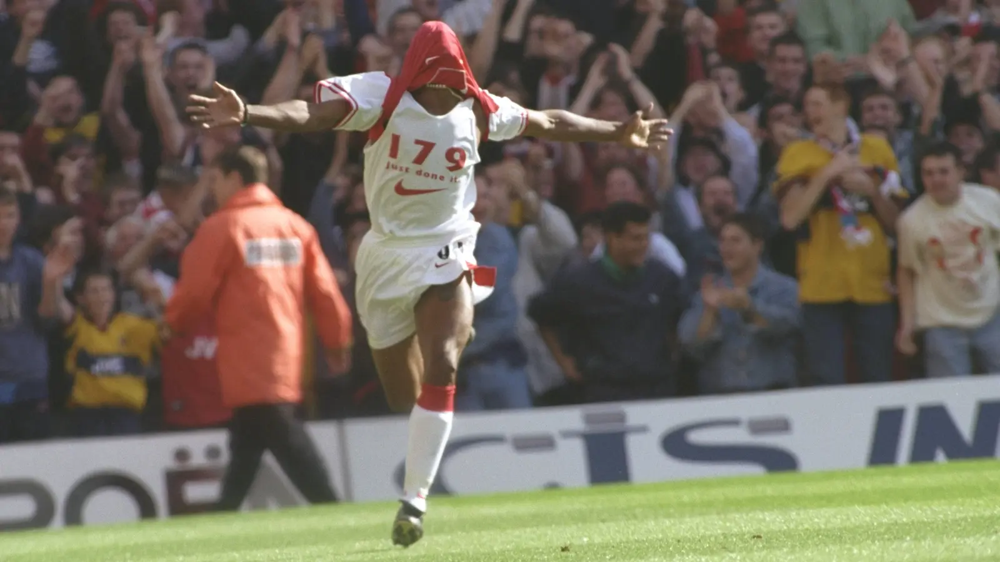

Arsenal · Ian Wright
The World
Was Late.
Một ngôi sao đã cháy từ rất lâu trước khi bóng đá kịp ngước lên và gọi tên ông.
Có một khoảnh khắc tại Highbury khi Ian Wright không còn là Ian Wright nữa.
Không còn người đàn ông mà cả khán đài từng gọi tên, không còn chân sút đã ghi đủ mọi kiểu bàn thắng trong màu áo Arsenal, không còn nụ cười rộng, chiếc răng vàng hay thứ năng lượng có thể làm một buổi chiều xám xịt ở London bỗng trở nên sáng hơn chỉ bằng một lần ông chạy về phía North Bank. Khi người thầy cũ bước ra trước mặt, Wright kéo chiếc mũ khỏi đầu, đứng chết lặng vài giây rồi bật khóc, không phải bằng những giọt nước mắt được giữ lại cho vừa đủ đẹp trước ống kính, mà bằng sự vỡ òa của một đứa trẻ vừa nhìn thấy người đầu tiên từng khiến mình tin rằng bản thân có thể trở thành một điều gì đó.
Ông đã nghĩ Sydney Pigden không còn sống. Ông đã mang theo lòng biết ơn dành cho người thầy đó qua gần như cả cuộc đời, nhưng vẫn tưởng rằng mình sẽ không bao giờ có cơ hội nói ra tất cả những gì chưa kịp nói. Rồi giữa Highbury, nơi hàng chục ngàn người từng đứng dậy vì những bàn thắng của Ian Wright, người đàn ông nổi tiếng đó lại cúi xuống trong vòng tay của một thầy giáo già, như thể mọi tiếng reo từng đi qua đời ông cuối cùng cũng phải lùi lại để nhường chỗ cho một câu nói rất nhỏ đã được thốt ra trong hành lang trường học từ nhiều thập kỷ trước.

Ian Wright khi đó mới khoảng tám tuổi, thường xuyên bị đuổi khỏi lớp vì không thể tập trung, vì nổi nóng, vì biến sự bất lực của mình thành những hành động khiến người lớn chỉ nhìn thấy một đứa trẻ gây rắc rối. Mr Pigden gặp cậu đứng ngoài hành lang không chỉ một lần. Ông có thể đi ngang, có thể lặp lại lời trách phạt mà Wright đã nghe đủ nhiều để không còn ngẩng đầu lên nữa, nhưng vào một ngày, ông dừng lại, bước vào lớp nói chuyện với giáo viên rồi quay ra bảo cậu đi theo mình.
Có những câu nói dài tới mức người ta phải mất cả một đời mới hiểu hết ý nghĩa của chúng. Cũng có những câu chỉ gồm ba từ, nhưng đủ mở ra một cánh cửa mà tất cả những người trước đó đều nghĩ nên đóng lại.
Mr Pigden đưa Wright tới thư viện, dạy cậu đọc, viết, kiên nhẫn, giao tiếp và cách gọi tên những cơn giận vẫn thường bùng lên trước khi cậu kịp hiểu điều gì đang xảy ra bên trong mình. Ông giao cho Wright những trách nhiệm nhỏ như thu sổ điểm danh hay phát sữa, những công việc chẳng có gì lớn lao với người trưởng thành nhưng lại vô cùng quan trọng với một đứa trẻ đã sống quá lâu trong cảm giác rằng sự hiện diện của mình chỉ làm mọi thứ trở nên khó khăn hơn. Lần đầu tiên, có một người đàn ông không hỏi phải làm gì để Ian bớt phiền phức, mà hỏi phải làm gì để cậu hiểu rằng những điều mình làm có ý nghĩa.
Rất lâu trước khi bóng đá chuyên nghiệp nhìn thấy một tiền đạo, Mr Pigden đã nhìn thấy một con người.
Có lẽ đó mới là điểm bắt đầu thật sự của câu chuyện Ian Wright, không phải ngày Crystal Palace trao cho ông hợp đồng đầu tiên, không phải ngày Arsenal trả mức phí kỷ lục của câu lạc bộ để đưa ông tới Highbury, cũng không phải ngày chiếc áo mang dòng chữ 179 xuất hiện trước cả khán đài. Câu chuyện bắt đầu trong một hành lang, nơi một đứa trẻ đang nhìn xuống sàn vì xấu hổ, và một người thầy đã chọn nhìn lâu hơn tất cả những người khác.
Người ta thường gọi Wright là một ngôi sao nở muộn, bởi ông đi vào bóng đá chuyên nghiệp chỉ vài tuần trước sinh nhật thứ hai mươi hai, khi phần lớn những tài năng cùng thế hệ đã có nhiều năm sống trong học viện, được huấn luyện, được bảo vệ và được bảo rằng họ thuộc về nơi này. Nhưng những ngôi sao không bắt đầu cháy vào đêm con người lần đầu nhìn thấy chúng. Ánh sáng có thể đã rời khỏi ngôi sao từ rất lâu, đi qua một khoảng tối quá lớn, rồi tới một ngày mới chạm được vào mắt người đang đứng dưới mặt đất.
Ian Wright cũng đã cháy từ rất lâu trước khi thế giới kịp nhìn thấy.
Ông bắt đầu đi thử việc từ khi còn là một đứa trẻ, rồi trải qua hơn một thập kỷ nghe những câu trả lời không, hoặc tệ hơn, không nghe thấy câu trả lời nào cả. Mỗi lần một cánh cửa đóng lại, ông trở về với thêm một phần nghi ngờ rằng có lẽ bóng đá đã nhìn mình đủ rõ và kết luận rằng mình đơn giản không thuộc về nó. Người ngoài có thể kể những năm tháng đó bằng vài dòng gọn gàng, một tài năng bị bỏ sót, một giấc mơ không chịu chết, nhưng sống bên trong nó chắc hẳn khác rất nhiều, bởi hy vọng khi phải chịu đựng quá lâu không còn là một ngọn lửa đẹp đẽ, nó trở thành thứ vừa sưởi ấm, vừa thiêu đốt người đang cố giữ lấy nó.
Có lần ở Brighton, sau nhiều tuần thử việc và tưởng rằng mình đã tiến rất gần tới một cơ hội, Wright ngồi trong khu vực văn phòng suốt nhiều giờ chỉ để chờ tiền đi tàu về London. Ông không có sách, không có báo, không có gì ngoài sự im lặng và cảm giác bất lực của một chàng trai đã đi rất xa để được nhìn thấy, nhưng một lần nữa lại ngồi đó như thể mình hoàn toàn vô hình. Khi cuối cùng có người nhận ra điều đang xảy ra và giúp ông lấy được tiền về nhà, Wright lên tàu rồi bật khóc, bởi năm giờ chờ đợi đó không chỉ nói về một chuyến đi, nó nói về cả cuộc đời của một người luôn phải ngồi lâu hơn người khác trước cánh cửa của sự công nhận.
Thế giới không nói với Ian Wright rằng ông không có tài năng bằng một khoảnh khắc duy nhất. Nó nói bằng hàng ngàn điều nhỏ, bằng những buổi thử việc kết thúc trong im lặng, bằng những ánh mắt lướt qua rồi dừng ở một người khác, bằng những chuyến tàu về nhà và những lần phải giải thích rằng lần này vẫn chưa được. Sau đủ nhiều lần như vậy, điều đáng sợ nhất không còn là việc người khác không tin mình, mà là một ngày chính mình cũng bắt đầu tin họ.
Wright từng đi tù khi mới mười chín tuổi vì không thanh toán các khoản phạt lái xe, rồi bước ra với cảm giác giấc mơ bóng đá đã ở quá xa để còn có thể gọi tên. Ông có gia đình cần chăm lo, có những hóa đơn thật hơn mọi giấc mơ và có quá nhiều vết thương để tiếp tục đặt mình trước một lần từ chối khác, nên ông học nghề, đi làm và dần chấp nhận rằng có thể trái bóng chỉ còn là thứ mình chơi vào cuối tuần, một phiên bản khác của cuộc đời từng có thể xảy ra nhưng đã không xảy ra.
Đến lúc Crystal Palace tìm tới, Wright thậm chí không còn muốn thử nữa.
Người ta thích kể về những cơ hội cuối cùng như thể nhân vật chính luôn lập tức nhận ra định mệnh đang gõ cửa, nhưng đời thật hiếm khi rõ ràng như vậy. Wright đã bị từ chối đủ nhiều để không còn thấy một buổi thử việc là cánh cửa dẫn tới tương lai. Ông chỉ nhìn thấy nguy cơ mất công việc đang nuôi gia đình, nguy cơ quay lại đúng cảm giác bất lực mà mình đã cố rời xa, và nguy cơ một lần nữa phải nghe bóng đá nói rằng nó không cần ông.
Phải tới khi một người bạn nói rằng ông sẽ không muốn già đi rồi tự hỏi điều gì có thể xảy ra nếu ngày đó mình chịu bước thêm một bước, Wright mới nhận lời. Ngay cả trong buổi thử việc, ông vẫn cố tỏ ra như không quan tâm, bởi có những người dùng sự thờ ơ như một chiếc áo giáp, nếu không đặt quá nhiều hy vọng vào một điều, có lẽ khi nó biến mất sẽ bớt đau hơn.
Nhưng cơ thể không biết nói dối như lời nói. Ông chạy, tranh chấp, ghi bàn, thở tới mức hai tay phải chống xuống đầu gối, rồi tiếp tục, như thể mười một năm bị bỏ qua đang cùng lao về phía trước trong từng bước chân. Crystal Palace cuối cùng ký hợp đồng với chàng trai hai mươi mốt tuổi đó, và từ khoảnh khắc thế giới nhìn thấy Ian Wright, mọi thứ diễn ra nhanh tới mức người ta gần như quên rằng ánh sáng đã phải đi qua một quãng tối dài tới đâu mới tới được Selhurst Park.

Wright không chơi bóng giống một người tin rằng sân khấu đó vốn dĩ thuộc về mình. Ông chơi như một người vẫn nghe thấy tiếng bản lề phía sau và sợ rằng cánh cửa có thể đóng lại bất cứ lúc nào.
Có sự cấp bách trong những bước chạy của ông, nhưng cũng có niềm vui gần như không thể giữ lại. Mỗi bàn thắng trông như một cuộc giải thoát, mỗi màn ăn mừng như câu trả lời được hét ra thay cho tất cả những năm tháng không ai chịu hỏi đúng câu, còn nụ cười sau đó mang theo sự ngỡ ngàng của một người vẫn chưa hoàn toàn tin rằng thế giới cuối cùng đã dành cho mình một chỗ.
Bởi những màn ăn mừng của Ian Wright chưa bao giờ chỉ thuộc về bàn thắng vừa xảy ra. Trong đó có cậu bé được chọn vào đội bóng của trường, chàng trai ngồi chờ ở Brighton, người thợ đã tưởng mình phải bỏ bóng đá lại phía sau, người cha muốn các con có một mái nhà khác với nơi mình từng lớn lên, và người học trò vẫn luôn muốn làm cho Mr Pigden tự hào. Mỗi lần bóng đi vào lưới, tất cả những con người đó cùng chạy về phía khán đài.
Crystal Palace cho Wright bóng đá chuyên nghiệp, nhưng Arsenal cho ông nơi để niềm vui đó trở thành một phần của lịch sử.
Khi Arsenal mua Wright vào tháng Chín năm 1991, ông đã hai mươi bảy tuổi, độ tuổi mà nhiều tiền đạo được nhìn như một sản phẩm gần hoàn thiện chứ không còn là một câu chuyện mới bắt đầu. Ông tới Highbury với mức phí kỷ lục của câu lạc bộ, nhưng sâu bên trong vẫn mang theo ký ức của người từng không có tiền đi tàu về nhà, từng từ chối thử việc chỉ vì không chịu nổi thêm một lần thất vọng, từng sống đủ lâu ngoài cánh cửa để việc bước qua nó không bao giờ trở thành điều hiển nhiên.
May mắn là ở phía bên kia cánh cửa đó có David Rocastle.
Rocky đã biết Wright từ những năm tháng ở Brockley, từng nói với ông rằng tài năng đó đủ tốt để chơi chuyên nghiệp vào lúc ngay cả Wright cũng không còn tin. Khi Arsenal hoàn tất buổi kiểm tra y tế, Rocastle chờ sẵn, đưa người bạn về nhà, kể cho ông nghe màu áo này có ý nghĩa gì và nhắc thật kỹ rằng có một trận đấu tuyệt đối không được phép thua. Hai cậu bé từng đi qua cùng những con đường ở Nam London sau cùng đứng cạnh nhau trong màu áo Arsenal, một người mang số 7, một người mang số 8, như thể có những giấc mơ phải đi vòng qua rất nhiều nơi mới tìm được đúng người mình từng hứa sẽ gặp lại.
Trong trận ra mắt giải vô địch cho Arsenal trước Southampton, Rocastle ghi một bàn còn Wright lập hat-trick. Nếu một người viết tiểu thuyết đặt chi tiết đó vào câu chuyện, có lẽ nó sẽ bị xem là quá tròn trịa, nhưng bóng đá đôi lúc vẫn rộng lòng sắp xếp một buổi chiều để những con người đã tin nhau trước khi thế giới chịu tin có thể cùng đứng trong một khung hình.

Wright tới Arsenal ở tuổi hai mươi bảy nhưng chơi với sự phấn khích của một cậu bé lần đầu được gọi tên. Ông ghi bàn bằng những cú sút căng, những cú lốp, những pha chạm bóng bản năng, những lần xoay người không cần thêm thời gian để tính toán, rồi ăn mừng bằng cả cơ thể như thể niềm vui nếu không được giải phóng ngay lập tức sẽ quá lớn để giữ bên trong. Ông không che giấu tình yêu của mình dành cho bóng đá, cũng không cố biến nó thành thứ cảm xúc điềm tĩnh hơn để phù hợp với hình ảnh một ngôi sao. Ian Wright vui như thế nào thì ông để cả Highbury nhìn thấy như vậy.
Có lẽ người ta yêu Wright không chỉ vì ông ghi quá nhiều bàn, mà vì qua ông, việc được chơi cho Arsenal chưa bao giờ trông giống một công việc. Nó trông giống một đặc ân mà ông vẫn còn ngạc nhiên vì được trao, một món quà đã tới muộn tới mức mỗi lần mở ra, ông đều muốn gọi tất cả mọi người lại để cùng nhìn thấy.
North Bank gọi tên ông, và mỗi lần như vậy, thế giới như đang cố trả lại một phần những năm tháng nó đã im lặng.
Nhưng không lời xin lỗi nào của thời gian có thể trả lại tuổi trẻ đã đi qua. Wright không thể trở lại những buổi thử việc cũ để nói với chàng trai đang ngồi chờ rằng rồi mọi thứ sẽ ổn, không thể bước vào căn phòng tuổi thơ để bảo đứa trẻ quay mặt vào tường trong lúc Match of the Day vang lên phía sau rằng một ngày chính cậu sẽ ngồi trong trường quay đó, cũng không thể tìm lại từng người đã nhìn qua mình và buộc họ phải nhìn thêm lần nữa.
Ông chỉ có thể ghi bàn.
Và Wright ghi bàn như thể mỗi lần trái bóng chạm lưới là một mảnh quá khứ được viết lại, không phải để xóa đi những gì đã xảy ra, mà để chứng minh rằng những gì xảy ra chưa bao giờ nói hết được ông là ai.
Ngày ông tiến gần kỷ lục 178 bàn của Cliff Bastin, cả Highbury không chỉ chờ một con số mới. Họ chờ khoảnh khắc một người từng phải mất hơn mười năm để được bóng đá chuyên nghiệp gọi tên sẽ trở thành chân sút vĩ đại nhất lịch sử Arsenal ở thời điểm đó. Trong trận gặp Bolton năm 1997, Wright ghi bàn gỡ để san bằng kỷ lục, rồi trong sự phấn khích kéo áo ngoài lên, để lộ dòng chữ 179 - Just Done It, dù thực tế đó mới chỉ là bàn thứ 178.
Chi tiết đó có thể bị xem là một sai sót buồn cười, nhưng nó đúng với Ian Wright tới mức gần như không thể thuộc về ai khác. Ông đã phải chờ quá lâu trong đời để được ăn mừng, nên khi khoảnh khắc tới gần, ông không còn đủ kiên nhẫn để giữ nó lại thêm vài phút. Niềm vui chạy nhanh hơn phép đếm, trái tim đi trước bảng thống kê, còn người đàn ông từng bị thế giới bắt chờ hết lần này tới lần khác cuối cùng đã tự cho phép mình tới sớm.
Năm phút sau, Wright ghi bàn thứ 179 thật sự, rồi hoàn tất hat-trick, và lịch sử cuối cùng cũng đuổi kịp chiếc áo ông đang mặc.

Ông rời Arsenal với 185 bàn thắng, một kỷ lục sau này được Thierry Henry vượt qua, nhưng có những con số không nhỏ đi chỉ vì một người khác đã bước xa hơn. Wright không còn đứng đầu danh sách, nhưng tên ông vẫn nằm ở một nơi sâu hơn bảng thống kê, trong ký ức của những người từng nhìn thấy một tiền đạo chạy về phía khán đài bằng niềm vui không biết tự bảo vệ mình, như thể mỗi bàn thắng đều là lần đầu tiên và cũng có thể là lần cuối cùng bóng đá cho phép ông được sống như vậy.
Có lẽ điều đẹp nhất trong câu chuyện Wright không nằm ở chỗ ông đã chứng minh tất cả những người từng bỏ qua mình sai. Sống một đời chỉ để trả lời những người không tin ta vẫn là để họ giữ quá nhiều quyền lực trong câu chuyện của mình. Điều đẹp hơn là ông đã trở thành đúng người mà những người từng thật sự nhìn thấy ông tin rằng ông có thể trở thành.
Mr Pigden không gặp một chân sút trong hành lang trường học. Ông gặp một đứa trẻ đang cần được yêu thương, được giao trách nhiệm và được tin tưởng đủ lâu để một ngày có thể tự tin vào chính mình. David Rocastle không nhìn thấy một cầu thủ ngoài hệ thống đã quá tuổi. Anh nhìn thấy người bạn có thể đứng cùng mình trong màu áo Arsenal. Những người đó không tạo ra tài năng của Wright, nhưng họ giữ cho ánh sáng không tắt trong khoảng thời gian thế giới còn chưa chịu nhìn.
Vì vậy, mỗi bàn thắng của Ian Wright có thể được đọc như một con số, nhưng cũng có thể được nghe như cùng một câu nói lặp lại qua nhiều năm.
Thầy đã đúng về con.
Sau bóng đá, Wright vẫn không học cách che giấu cảm xúc để trở thành một huyền thoại xa cách hơn. Ông khóc, cười lớn, ôm người khác, nói về những vết thương của tuổi thơ, về bạn bè, gia đình, tình yêu dành cho Arsenal và những điều mà rất nhiều người đàn ông thuộc thế hệ ông từng được dạy phải chôn thật sâu để không ai nhìn thấy. Có thể chính vì từng sống quá lâu trong cảm giác vô hình, Wright hiểu giá trị của việc cho người khác biết rằng cảm xúc của họ đang được nhìn thấy và không làm họ nhỏ đi.
Một người từng được cứu bởi sự hiện diện của một người đàn ông biết dừng lại, sau này cũng trở thành kiểu người luôn có vẻ sẵn sàng dừng lại vì người khác.
Đó là lý do cuộc hội ngộ với Mr Pigden tại Highbury mang sức nặng lớn hơn một đoạn phim cảm động. Trong khoảnh khắc Wright bỏ mũ, nhìn người thầy cũ rồi vỡ òa, tất cả những phiên bản của ông dường như cùng tồn tại trong một cái ôm, cậu bé từng bị đẩy ra khỏi lớp, chàng trai bị bóng đá từ chối, người lao động đã tưởng giấc mơ khép lại, chân sút được Highbury tôn thờ và người đàn ông vẫn mang theo từng điều một người thầy đã trao từ khi chẳng ai khác nghĩ cậu đáng để trao điều gì.
Cả thế giới phải mất rất nhiều năm mới nhìn thấy Ian Wright. Crystal Palace nhìn thấy một tiền đạo khi ông đã hai mươi mốt tuổi. Arsenal nhìn thấy một chân sút có thể trở thành lịch sử khi ông đã hai mươi bảy. Highbury nhìn thấy một biểu tượng, còn những thế hệ sau nhìn thấy trong ông một niềm vui, sự chân thành và một tình yêu dành cho bóng đá chưa bao giờ chịu học cách nói nhỏ đi.
Nhưng rất lâu trước tất cả những điều đó, trong một hành lang trường học nơi một cậu bé lại bị đẩy ra ngoài, đã có một người đàn ông bước tới, không nhìn thấy một vấn đề cần bị loại bỏ mà nhìn thấy một đứa trẻ cần được đưa theo.
Ba từ được nói ra ngày hôm đó không hứa về Crystal Palace, Arsenal, đội tuyển Anh hay bất kỳ kỷ lục nào. Chúng chỉ hứa rằng trong khoảnh khắc đó, Ian Wright không còn phải đứng một mình.
Có lẽ ánh sáng đã bắt đầu hành trình từ chính nơi ấy.
Nó đi qua những bức tường của tuổi thơ, qua các buổi thử việc không có câu trả lời, qua hành lang ở Brighton, cánh cửa phòng giam, những ca làm tại nhà máy, sân cỏ bán chuyên, Selhurst Park, Highbury và hàng trăm lần trái bóng nằm lại trong lưới. Nó đi rất lâu, lâu tới mức khi cả thế giới cuối cùng ngước lên và gọi tên Ian Wright, người ta tưởng rằng một ngôi sao vừa mới xuất hiện.
Nhưng ngôi sao đó chưa bao giờ tới trễ.
Chỉ là thế giới đã mất quá nhiều thời gian mới chịu nhìn lên.